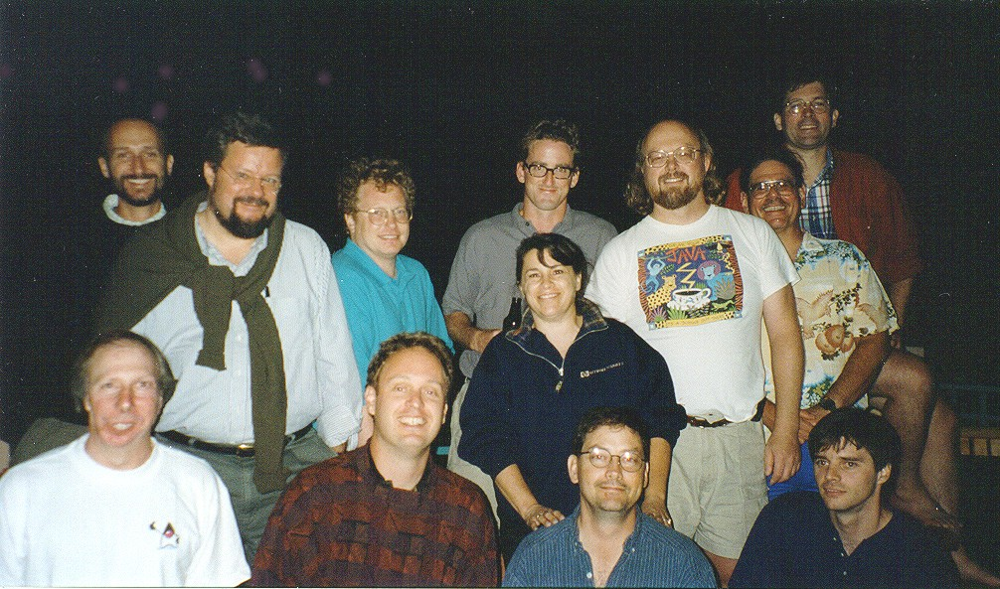

COMO FOI CRIADO O JAVA ?

No ano de 1991, a empresa Sun Microsystems deu início ao Green Project, projeto esse que originou uma linguagem de programação orientada a objetos, denominada Java. O objetivo inicial do projeto era de antecipar as tendências tecnológicas futuras.  Patrick Naughton, Mike Sheridan e James Gosling acreditavam que num futuro próximo iria ocorrer uma convergência dos computadores com equipamentos e eletrodomésticos utilizados pela maioria das pessoas diariamente.Por fim, acabaram criando uma nova linguagem de programação que hoje é controlada pela Java Community Process. A linguagem de programação Java é objetivada principalmente na orientação a objeto, independência de plataforma, recursos de rede, carga dinâmica de código e segurança, além disso, é uma linguagem compilada.
COMO JAVA É UTILIZADA ATUALMENTE ?
Atualmente, diversas páginas da web fazem a utilização de algum recurso em Java. Essa linguagem segue evoluindo de forma a gerar importantes derivações como, por exemplo, Java script (ao contrário do Java ela oferece tipagem dinâmica, é interpretada, oferece excelente suporte a expressões regulares).
💣 Cuidado
Java e JavaScript não são a mesma coisa, tendo empresas, funcionalidades e propostas diferentes.

Recomendação
Para quem se interessar e quiser fazer um Curso Grátis e com qualidade pode acessar o canal do youtube do Curso em Vídeo Lá ele disponibiliza um curso completo e bem legal para iniciantes em Java.